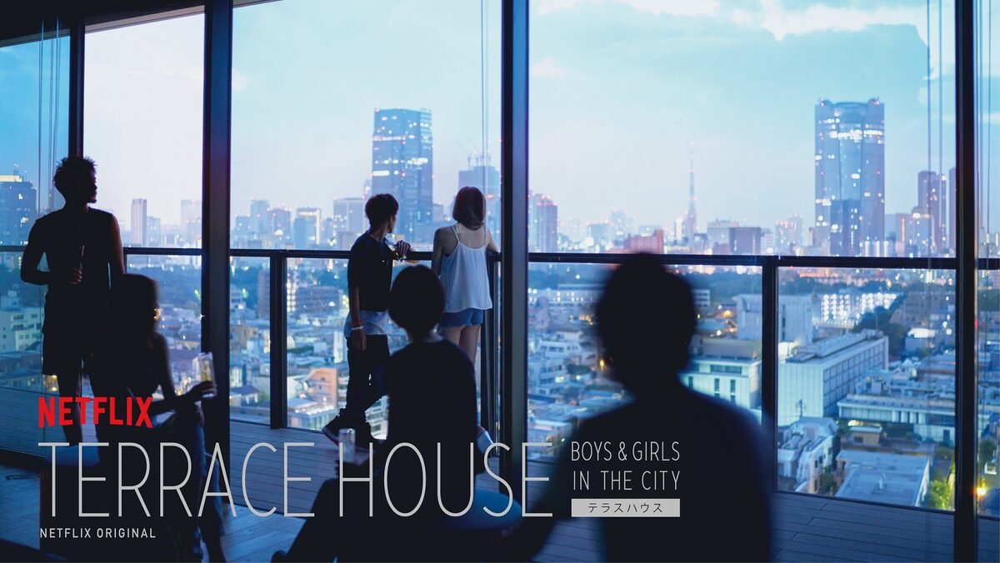
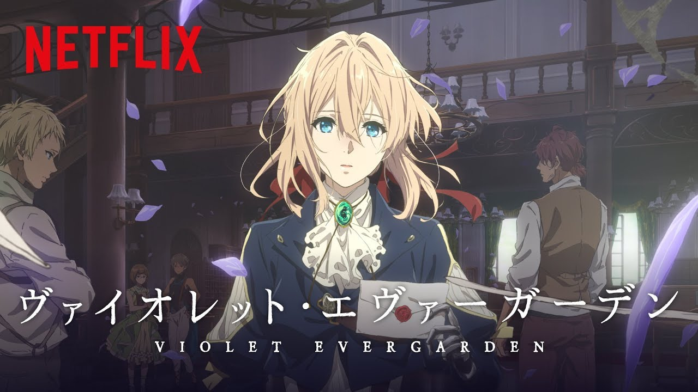
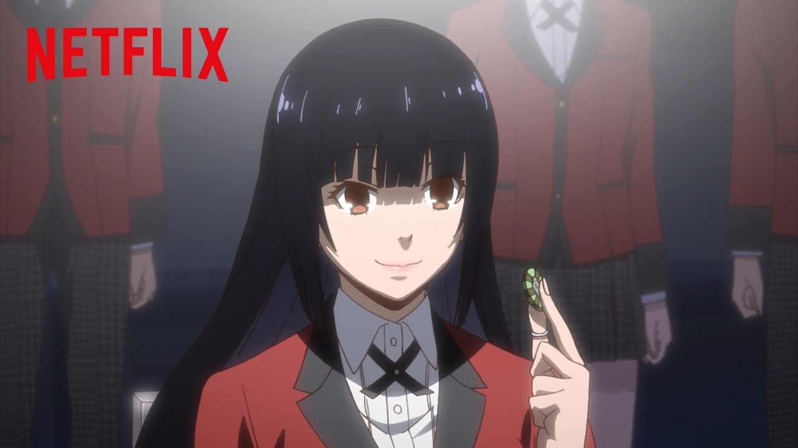
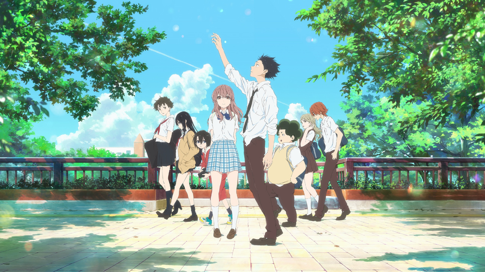
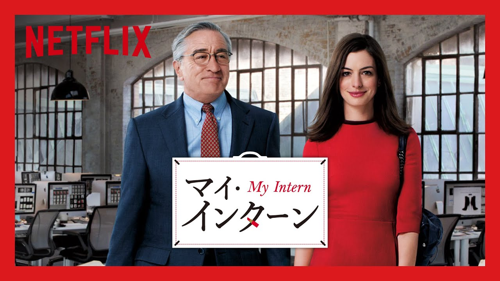

<!DOCTYPE html>
<html lang="ja">

<head>
    <meta charset="UTF-8">
    <meta name="viewport" content="width=device-width, initial-scale=1.0">
    <meta http-equiv="X-UA-Compatible" content="ie=edge">
    <!-- css -->
    <link rel="stylesheet" media="(min-width: 480px)" href="index.css">
    <link rel="stylesheet" media="(max-width: 480px)" href="index.css">
    <!-- <link rel="stylesheet" type="text/css" href="index.css"> -->
    <!-- bootstorap -->
    <link rel="stylesheet" href="https://stackpath.bootstrapcdn.com/bootstrap/4.4.1/css/bootstrap.min.css"
        integrity="sha384-Vkoo8x4CGsO3+Hhxv8T/Q5PaXtkKtu6ug5TOeNV6gBiFeWPGFN9MuhOf23Q9Ifjh" crossorigin="anonymous">
    <script src="https://code.jquery.com/jquery-3.4.1.slim.min.js"
        integrity="sha384-J6qa4849blE2+poT4WnyKhv5vZF5SrPo0iEjwBvKU7imGFAV0wwj1yYfoRSJoZ+n"
        crossorigin="anonymous"></script>
    <script src="https://code.jquery.com/jquery-3.2.1.min.js"></script>
    <!-- google fonts -->
    <link href="https://fonts.googleapis.com/css?family=Montserrat+Subrayada&display=swap" rel="stylesheet">
    <link href="https://fonts.googleapis.com/css?family=Saira+Stencil+One&display=swap" rel="stylesheet">
    <link href="https://fonts.googleapis.com/css?family=M+PLUS+Rounded+1c&display=swap" rel="stylesheet">
    <script src="https://cdn.jsdelivr.net/npm/popper.js@1.16.0/dist/umd/popper.min.js"
        integrity="sha384-Q6E9RHvbIyZFJoft+2mJbHaEWldlvI9IOYy5n3zV9zzTtmI3UksdQRVvoxMfooAo"
        crossorigin="anonymous"></script>
    <script src="https://stackpath.bootstrapcdn.com/bootstrap/4.4.1/js/bootstrap.min.js"
        integrity="sha384-wfSDF2E50Y2D1uUdj0O3uMBJnjuUD4Ih7YwaYd1iqfktj0Uod8GCExl3Og8ifwB6"
        crossorigin="anonymous"></script>
    <script type="text/javascript" src="./footerFixed.js"></script>
    <script type="text/javascript">
        $(function () {
            $("#navi-btn").click(function () {
                if (!$("#navi-btn").hasClass("navi-btn-on")) {
                    $("#navi-btn").addClass("navi-btn-on");
                    $("#navi-btn p").text("CLOSE");
                    $("#navi-menu").fadeIn();
                } else {
                    $("#navi-btn").removeClass("navi-btn-on")
                    $("#navi-btn p").text("MENU");
                    $("#navi-menu").fadeOut();
                }
            });
        });

        $(function () {
            $('a[href^="#"]').click(function () {
                var speed = 1000;
                var href = $(this).attr("href");
                var target = $(href == "#" || href == "" ? 'html' : href);
                var position = target.offset().top;
                $('body,html').animate({ scrollTop: position }, speed, 'swing');
                return false;
            });
        });
    </script>
    <title>kiriblog</title>
</head>

<body id="home">
    <nav class="navbar navbar-expand-lg navbar-light bg-light n-top">
            <a href="sample.html">
                <span class="navbar-brand h1">
                    <span class="nav-link" id="title">kiriblog</span> 
                </span>
            </a> 
            <div class="menu-trigger navi-btn navbar-toggler" id="navi-btn" data-toggle="collapse" data-target="#navbarNav"
                aria-controls="navbarNav" aria-expanded="false" aria-label="Toggle navigation">
                <span></span>
                <span></span>
                <span></span>
            </div>
            <div class="collapse navbar-collapse" id="navbarNav">
                <ul class="navbar-nav">
                    <li class="nav-item active">
                        <a class="nav-link" href="#home">Home <span class="sr-only">(current)</span></a>
                    </li>
                    <li class="nav-item">
                        <a class="nav-link" href="netflix_mybest.html">Pick UP</a>
                    </li>
                    <li class="nav-item">
                        <a class="nav-link" href="keyaki.html">Keyaki</a>
                    </li>
                </ul>
            </div>
        </nav>
</body>

<!--  -->
<a href="sample.html">
    <div class="l-card-top">
            <div class="l-thumbnail-top">
                <figure class="thumbnail-wrapper-top">
                    
                </figure>
                <span class="more-text-top num">
                    TOP
                </span>
            </div>
        </div>
</a>


<div class="container-fluid">
        <div class="row flex-row">
          <div class="col-md-2"></div>
            <div class="col-md-8 col-xs-12 center-p" id="1">
                <span class="num">NO.1</span>
                <span class="num-2">PICK UP</span>
            <p class="sub-text">Netflixでおすすめする映画・アニメ・バラエティ５選</p>
                
            <br>
            <p class="lp">
                    僕の最近の休日の過ごし方は、家でNetflixを見ること。<br><br>

                    そんな僕が紹介する、絶対見て欲しい映画・アニメ・バラエティを５つ選びました。<br>
        
                    これをみて少しでも興味を持てたら嬉しいです。 
            </p>
            <br>
            <div class="page">page</div>
            <ul class="sample1">
                    <a href="#1" style="text-decoration: none;"><li>TERRACE HOUSE</li></a>
                    <a href="#2" style="text-decoration: none;"><li>ヴァイオレット・エヴァーガーデン</li></a>
                    <a href="#3" style="text-decoration: none;"><li>賭ケグルイ</li></a>
                    <a href="#4" style="text-decoration: none;"><li>聲の形</li></a>
                    <a href="#5" style="text-decoration: none;"><li>マイ・インターン</li></a>
            </ul>
            <br>
            <div id="1">
                <h3>1. TERRACE HOUSE</h3>
            </div>
            <br>
                
            
            <br>
            <p>
                男女６人が共同生活している様子を、映し出している。<br>
                素敵なお家と車があり、台本なし。<br>
                その中で恋愛感情が生まれたり、人間関係での感情を伝えている。<br>
                現在、日本だけでなく海外でも人気でNetflixでの配信は、１９０カ国以上になっています。その人気の理由には、ノンフィクションでいい意味で何も起こらない日常を映し出されているからだという。
            </p>
                <div class="box29">
                    <div class="box-title">POINT</div>
                    <p>
                        TERRACE HOUSEはなんといっても、映像がとてもオシャレ！<br>
                        背景や建物、食べ物すべてがとても魅了されてしまいます。<br>
                        湘南の海、スキー、どれも行ってみたいなと思わせるデザイナーさんは本当にプロなんだなと思いました。<br>
                        TERRACE HOUSEはシェアハウスをただただ写してるだけでなく、映像にまでこだわりをみせ、楽しさを倍増させています。
                    </p>
                </div>
            <br>
            <h3 id="2">2. ヴァイオレット・エヴァーガーデン</h3><br>
                
            <br>
            <p>
                戦争後、姿を消した少佐を追うヴァイオレット・エヴァーガーデン。<br>
                愛とは何かを、自動手記人形として様々な人の手紙を書くお手伝いとして、仕事を始める。<br>
                それぞれの手紙への思いが、手紙への大切さや優しさが伝わる。<br>
                京都アニメーションが送る、愛について深く考えさせられるアニメです。<br>
                 ＜全１２話＞
            </p>
            <div class="box29">
                    <div class="box-title">POINT</div>
                    <p>
                        京都アニメーションの圧倒される美しさはどのアニメもすごいです。その中でも、ヴァイオレット・エヴァーガーデンは髪の毛一本一本までとても細かく、たくさん鳥肌が経ちました。<br>
                        描写とともに物語は、美しさを出しています。<br>
                        その人が手紙に込めた想いはたくさんあり、そのひとつひとつがとても感動させられます。
                    </p>
                </div>
                <br>
            <h3 id="3">3. 賭ケグルイ</h3><br>
                
            <br>
            <p>
                ギャンブルで人生を大きく変えてしまう、百花王学園。そこに転校してきた、主人公：蛇喰夢子。<br>
                ギャンブルで負け学園で借金を抱えきれなくなった生徒は、非協力傾向生徒として奴隷のような扱いをうける、一か八かの勝負。<br>
                そんな中、生徒会役委員に戦いを挑む蛇喰夢子は、生徒会のイカサマを見破りながら命賭けのゲームを行う。<br>
                アニメは１期・２期、そして実写も成功している、ギャンブル学園物語。<br>
            </p>
            <div class="box29">
                    <div class="box-title">POINT</div>
                    <p>
                        登場人物全ての人物は、常に命賭け賭け。<br> 
                        負ければ地獄、人間の本能剥き出しの狂気シーンの描写は、ギャップの驚きとともに、ハラハラ感が増す。<br>
                        その狂った顔、そしてギャンブルへの恐怖これぞまさに賭ケグルイ。
                    </p>
                </div>
                <br>
            <h3 id="4">4. 聲の形</h3><br>
                
            <br>
            <p>
                小学校で、耳の聞こえない少女をいじめていまう少年。高校で再会し、少女の声を訪ねる。<br>
                物語の中の、いじめだったり人間関係はとてもリアルで、胸が苦しくなる。<br>
                happyな話ではないが、少女の想いを一生懸命届ける姿に感動します。<br>
                京都アニメーション、アニメ映画。
            </p><br>

            <div class="box29">
                    <div class="box-title">POINT</div>
                    <p>
                        先ほども語ったように、話の内容がとてもリアルでいろんな感情が混じってすごく泣けます。<br>
                        僕の場合は、最初の２０分ほどで泣いてしまいました。<br>
                        今を生きる中でもたくさん考えさせらる映画だと思いました。
                    </p>
                </div>
                <br>
            <h3 id="5">5. マイ・インターン</h3><br>
                
            <br>
            <p>
                ファッションサイトの社長の部下として、インターンしたきた７０歳男性。<br>
                彼の人生豊富を武器に、社長のジュールズの人生を変えていく。<br>
                男女の友情関係がたくさんの悩みを解決していく姿がとても日常のようでずっとみていたい映画です。
            </p><br>

            <div class="box29">
                    <div class="box-title">POINT</div>
                    <p>
                        彼女が涙を流した時、とっさの出来事に男の必需品であるハンカチが大事なんだなと思いました。<br>
                        ７０年生きてきた経験の中で、男のよさを勉強できるような気がしました。<br>
                        きっとあなたも、この映画を見て「ハンカチを持とう」という気持ちになります。
                    </p>
                </div>
                <br>

                <div class="page-btn p-2">
                        <a href="#home" class="btn-gradient-radius" style="text-decoration: none;">TOP</a>
                    </div>
          </div>
          <div class="col-md-2"></div>
        </div>
    </div>
    <footer>
            <ul class="footer-menu">
                    <a href="#home" style="text-decoration: none;"><li>Home ｜</li></a>
                    <a href="#1" style="text-decoration: none;"><li>Pick UP ｜</li></a>
                    <a href="#2" style="text-decoration: none;"><li>Keyaki ｜</li></a>
                    <a href="3" style="text-decoration: none;"><li>Profile </li></a>
                    </ul>
                    <p class="del">© All rights reserved by kiriblog.</p>
        </footer>
